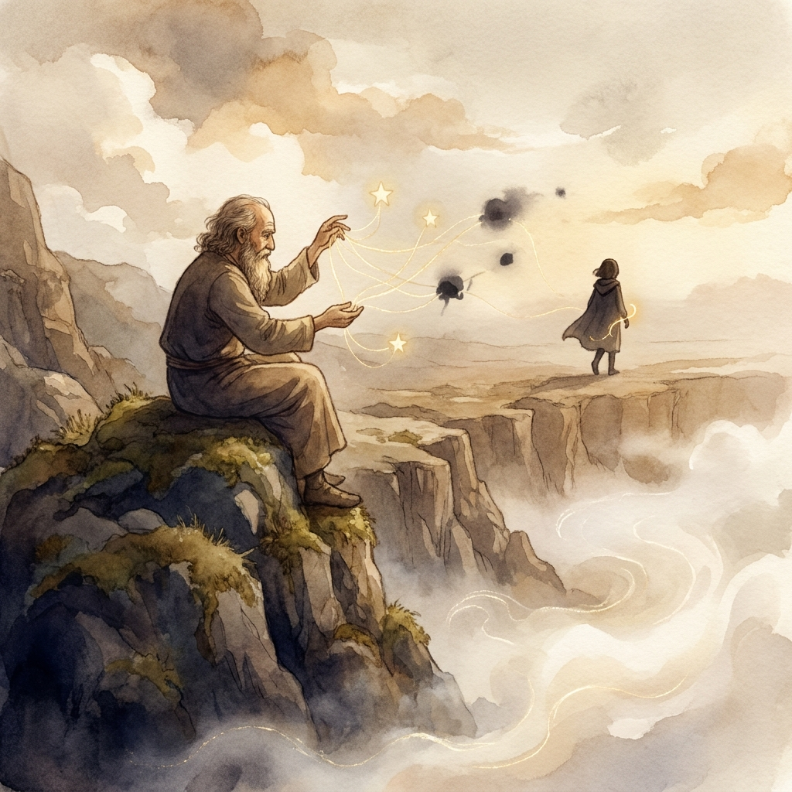
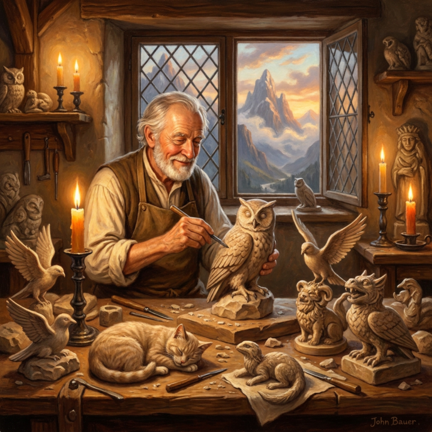
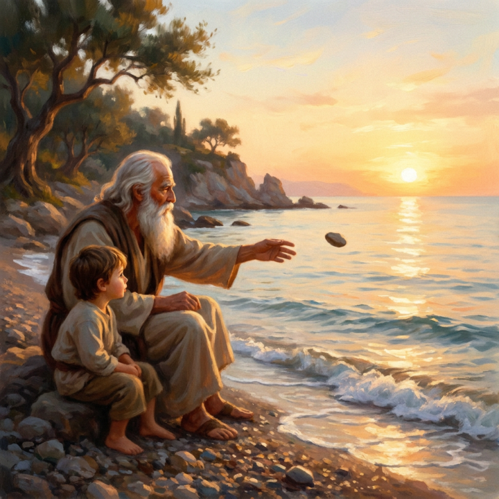
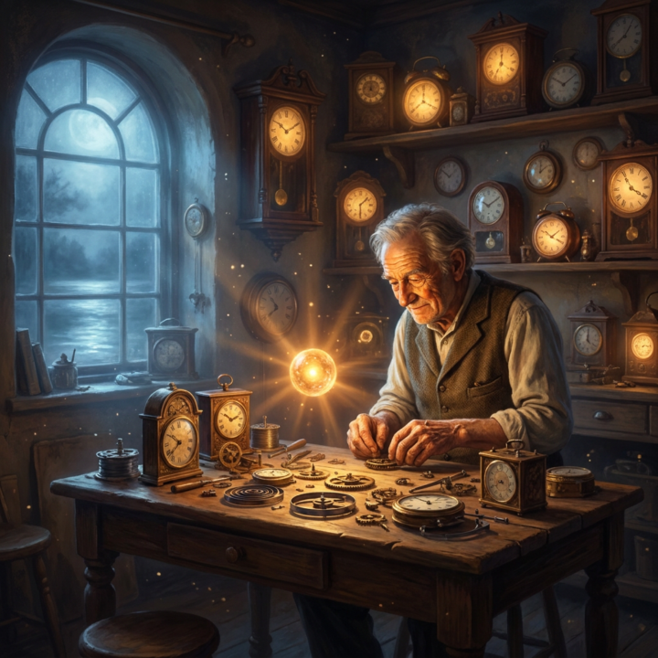
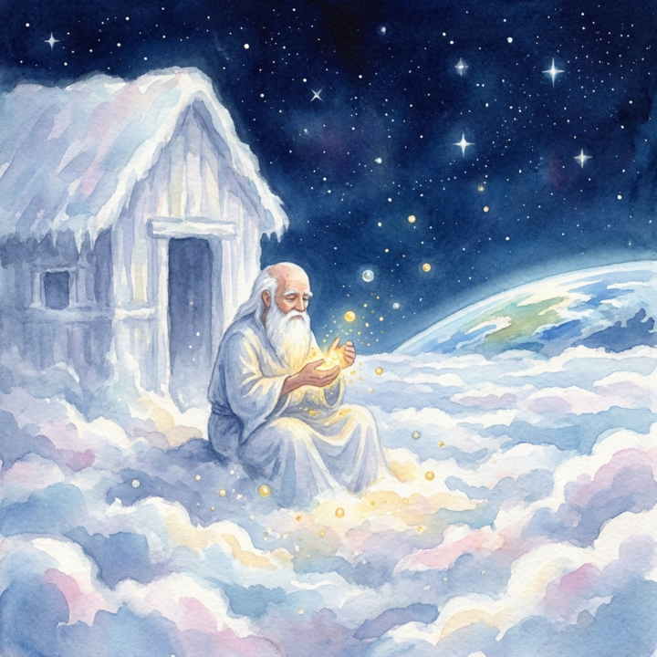

Die Geschichten
Neun poetische Märchen aus dem Storyteller-Bereich.

Geschichte EinsDer Fadenweber am Rande der Welt
Ein unsichtbarer Faden verbindet jene, die einander nie begegnen.
Lesen Geschichte Zwei
Geschichte Zwei
Die Sternenstaubsammlerin
Lina sammelt goldene Friedenssplitter und verliert ihre Angst vor der Nacht.
Lesen Geschichte Drei
Geschichte Drei
Die Brücke aus Sternenstaub
Zwischen Gestern und Morgen fischt ein alter Mann verlorene Träume.
Lesen Geschichte VierDie kleine Laterne am Rand der Welt
Eine Laterne wird zum stillen Hüter der Geschichten, die Menschen ihr anvertrauen.
Lesen
Geschichte FünfDer Steinmetz
Ein Steinmetz schnitzt Frieden in Tiere und lehrt einen König das Wachsen.
Lesen Geschichte SechsDer kleine Mond Luma
Ein verlorener Mond lernt vom Meer, dass Zugehörigkeit auch im Leuchten liegt.
Lesen
Geschichte SiebenDer alte Mann und das Meer
Ein Kind versteht, warum ein großes Meer kleine Sorgen tragen kann.
Lesen
Geschichte AchtDer Uhrmacher Eldwin
Eldwin baut Uhren, die nicht Zeit zählen, sondern Verstehen.
Lesen
Geschichte NeunDer Sternenstaubmacher
Orin formt Sternschnuppen aus den vergessenen Wünschen der Menschen.
Lesen